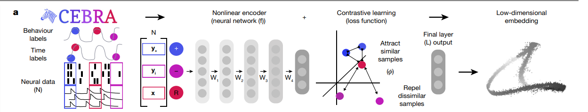

Using CEBRA-Time to Identify Latent Embeddings#
In this notebook, we will explore the applications of the advanced machine learning algorithm, CEBRA (created by the Mathis Laboratory), to analyze OpenScope data from the Allen Institute. CEBRA is an algorithm that optimizes neural networks that map neural activity onto an embedding space [Schneider et al., 2023]. This algorithm leverages contrastive learning and a generalized InfoNCE loss function to learn representations where similar data points are pulled closer together while dissimilar data points are pushed apart within the embedding space. CEBRA has three different modes: CEBRA-Time (fully unsupervised/self supervised), CEBRA-Behavior (supervised), and CEBRA-Hybrid.
In this notebook, we will be utilizing CEBRA-Time, so our input data will be unlabeled and there will be no behavioral assumptions that influence neuronal activity. We utilize CEBRA-Time to create a 3D latent embedding space of a mouse’s neural activity while passively viewing visual stimuli. This algorithm can help us identify patterns in neural activity and its relationship to the visual stimulus. We use the neural data to train the model, generate embeddings for each type of visual stimulus, and plot different subsections of the data separately onto the same embedding space.
Below is a visualization of the pipeline that displays the steps from how the algorithm receives input data to how the final output of the embedding is produced. To briefly describe how it works, CEBRA takes input in the form of positive and negative pairs of data relative to a reference point. An example of a positive and negative pair for behavioral labels would be two positions on a track that are close together in space versus a position on a track that is far away. Likewise, for time labels, a positive pair would be data from two points that occur close together in time versus a data point that occurs farther away in time. Next, a nonlinear encoder receives the data in the form of a triplet that contains 3 vectors: neural data from the positive points, neural data from the negative points, and neural data from the reference points. The nonlinear encoder maps the raw neural data onto a lower dimensional feature space. Here, CEBRA leverages contrastive learning to learn representations where similar pairs are pulled closer together and dissimilar pairs are pushed apart in an embedding space. During training, similarity scores are computed for positive and negative pairs. A modified InfoNCE loss function is calculated and gradient descent is used to optimize the loss. Once the network is fully trained, the lower-dimensional embedding space is produced from the final output layer.
For further details on CEBRA, you can refer to the paper published by the Mathis Lab or visit the CEBRA website to gain a deeper understanding on these concepts. Understanding how the input data is processed is important as well as how each point in the embedding relates to a given input.
Additionally, in this notebook, we will be using open source data published by the Allen Institute titled Measuring Stimulus-Evoked Neurophysiological Differentiation in Distinct Populations of Neurons in Mouse Visual Cortex. This study employs two-photon calcium imaging to study stimulus-evoked neuronal response in excitatory neurons in five different visual cortical areas. Recordings were taken from mice during passive viewing of either naturalistic or phase-scrambled movie stimuli. During the viewing, each stimulus type was repeated 10 times, nonconsecutively. Our objective is to use CEBRA to generate an embedding space that is consistent across movie repeat. Essentially, we aim to extract a representation of the movie that could be present in the neuronal activity across all repeats.

Figure 1a, Learnable latent embeddings for joint behavioural and neural analysis
Notebook Settings for Google Colab#
To ensure the fastest and runtime, check to make sure your hardware accelerator is using GPU. This should be pre-set for the notebook, but here are the steps to double-check it is set correctly:
click “Edit” below the notebook title
near the bottom of the list click “Notebook settings”
In the “Hardware Accelerator” dropdown, click “GPU”
select the “GPU type” that you please
click “Save” and run the notebook
Create CEBRA Environment and Download Dependencies#
⚠️Note: If running on a new environment, run this cell once and then restart the kernel⚠️
try:
from dandi_utils import dandi_download_open
except:
!git clone https://github.com/AllenInstitute/openscope_databook.git
%cd openscope_databook
%pip install -e .
import os
import cebra
import matplotlib.pyplot as plt
import numpy as np
import pandas as pd
from cebra import CEBRA
%matplotlib inline
Download Data#
We download the data using the same process as in previous notebooks. If you need help downloading OpenScope data, see the Downloading an NWB File notebook.
# download ophys files
dandiset_id = "000036"
dandi_filepath = "sub-389014/sub-389014_ses-20180705T152908_behavior+image+ophys.nwb"
download_loc = "."
dandi_api_key = None
# download data
io = dandi_download_open(dandiset_id, dandi_filepath, download_loc, dandi_api_key=dandi_api_key)
nwb = io.read()
A newer version (0.56.0) of dandi/dandi-cli is available. You are using 0.55.1
PATH SIZE DONE DONE% CHECKSUM STATUS MESSAGE
sub-389014_ses-20180705T152908_behavior+image+ophys.nwb 1.3 GB 1.3 GB 100% ok done
Summary: 1.3 GB 1.3 GB 1 done
100.00%
Downloaded file to ./sub-389014_ses-20180705T152908_behavior+image+ophys.nwb
Opening file
/opt/conda/lib/python3.10/site-packages/hdmf/spec/namespace.py:531: UserWarning: Ignoring cached namespace 'hdmf-common' version 1.1.3 because version 1.5.1 is already loaded.
warn("Ignoring cached namespace '%s' version %s because version %s is already loaded."
/opt/conda/lib/python3.10/site-packages/hdmf/spec/namespace.py:531: UserWarning: Ignoring cached namespace 'core' version 2.2.5 because version 2.5.0 is already loaded.
warn("Ignoring cached namespace '%s' version %s because version %s is already loaded."
/opt/conda/lib/python3.10/site-packages/pynwb/base.py:193: UserWarning: TimeSeries 'running_velocity': Length of data does not match length of timestamps. Your data may be transposed. Time should be on the 0th dimension
warn("%s '%s': Length of data does not match length of timestamps. Your data may be transposed. "
/opt/conda/lib/python3.10/site-packages/pynwb/ophys.py:360: UserWarning: RoiResponseSeries 'imaging_plane_1': The second dimension of data does not match the length of rois, but instead the first does. Data is oriented incorrectly and should be transposed.
warnings.warn("%s '%s': The second dimension of data does not match the length of rois, "
/opt/conda/lib/python3.10/site-packages/pynwb/base.py:193: UserWarning: RoiResponseSeries 'imaging_plane_1': Length of data does not match length of timestamps. Your data may be transposed. Time should be on the 0th dimension
warn("%s '%s': Length of data does not match length of timestamps. Your data may be transposed. "
/opt/conda/lib/python3.10/site-packages/pynwb/image.py:106: UserWarning: ImageSeries 'conspecifics': Length of data does not match length of timestamps. Your data may be transposed. Time should be on the 0th dimension
warnings.warn(
/opt/conda/lib/python3.10/site-packages/pynwb/image.py:106: UserWarning: ImageSeries 'crickets': Length of data does not match length of timestamps. Your data may be transposed. Time should be on the 0th dimension
warnings.warn(
/opt/conda/lib/python3.10/site-packages/pynwb/image.py:106: UserWarning: ImageSeries 'dots': Length of data does not match length of timestamps. Your data may be transposed. Time should be on the 0th dimension
warnings.warn(
/opt/conda/lib/python3.10/site-packages/pynwb/image.py:106: UserWarning: ImageSeries 'human_montage': Length of data does not match length of timestamps. Your data may be transposed. Time should be on the 0th dimension
warnings.warn(
/opt/conda/lib/python3.10/site-packages/pynwb/image.py:106: UserWarning: ImageSeries 'man_writing': Length of data does not match length of timestamps. Your data may be transposed. Time should be on the 0th dimension
warnings.warn(
/opt/conda/lib/python3.10/site-packages/pynwb/image.py:106: UserWarning: ImageSeries 'mouse_montage_1': Length of data does not match length of timestamps. Your data may be transposed. Time should be on the 0th dimension
warnings.warn(
/opt/conda/lib/python3.10/site-packages/pynwb/image.py:106: UserWarning: ImageSeries 'mouse_montage_1_spatial_phase_scramble': Length of data does not match length of timestamps. Your data may be transposed. Time should be on the 0th dimension
warnings.warn(
/opt/conda/lib/python3.10/site-packages/pynwb/image.py:106: UserWarning: ImageSeries 'mouse_montage_1_temporal_phase_scramble': Length of data does not match length of timestamps. Your data may be transposed. Time should be on the 0th dimension
warnings.warn(
/opt/conda/lib/python3.10/site-packages/pynwb/image.py:106: UserWarning: ImageSeries 'mouse_montage_2': Length of data does not match length of timestamps. Your data may be transposed. Time should be on the 0th dimension
warnings.warn(
/opt/conda/lib/python3.10/site-packages/pynwb/image.py:106: UserWarning: ImageSeries 'mousecam': Length of data does not match length of timestamps. Your data may be transposed. Time should be on the 0th dimension
warnings.warn(
/opt/conda/lib/python3.10/site-packages/pynwb/image.py:106: UserWarning: ImageSeries 'mousecam_spatial_phase_scramble': Length of data does not match length of timestamps. Your data may be transposed. Time should be on the 0th dimension
warnings.warn(
/opt/conda/lib/python3.10/site-packages/pynwb/image.py:106: UserWarning: ImageSeries 'noise': Length of data does not match length of timestamps. Your data may be transposed. Time should be on the 0th dimension
warnings.warn(
/opt/conda/lib/python3.10/site-packages/pynwb/image.py:106: UserWarning: ImageSeries 'snake': Length of data does not match length of timestamps. Your data may be transposed. Time should be on the 0th dimension
warnings.warn(
/opt/conda/lib/python3.10/site-packages/pynwb/image.py:106: UserWarning: ImageSeries 'spontaneous': Length of data does not match length of timestamps. Your data may be transposed. Time should be on the 0th dimension
warnings.warn(
Setting Up The Stimulus Table#
The stimulus table below includes information about the type of visual stimulus that was presented to the mice during the passive viewing experiment. It contains the start and stop time for each presentation of a frame, the frame number, and the stimulus type. The frame number helps us to identify the exact part of the movie the mouse is viewing. Before proceeding with the rest of the code, it’s advisable to become familiar with the stimulus table and the data it contains. Understanding the structure and content of the stimulus table will help with comprehending the subsequent code.
The function stim_obj_to_table retrieves start_times, stop_times, frames, and stim-type from an NWB file and then organizes that data into a pandas dataframe. Pandas dataframes are a very useful way to organize, manipulate, and explore data.
# use this if nwb intervals section has no stim information
def stim_obj_to_table(nwb):
all_labeled_stim_timestamps = []
for stim_type, stim_obj in nwb.stimulus.items():
start_times = stim_obj.timestamps[:-1]
stop_times = stim_obj.timestamps[1:]
frames = stim_obj.data[:-1]
l = len(start_times)
labeled_timestamps = list(zip(start_times, stop_times, frames, [stim_type]*l))
all_labeled_stim_timestamps += labeled_timestamps
all_labeled_stim_timestamps.sort(key=lambda x: x[0])
stim_table = pd.DataFrame(all_labeled_stim_timestamps, columns=("start time", "stop time", "frame", "stimulus type"))
return stim_table
stim_table = stim_obj_to_table(nwb)
# view the stimulus table
stim_table
| start time | stop time | frame | stimulus type | |
|---|---|---|---|---|
| 0 | 27.475720 | 27.492416 | 0 | spontaneous |
| 1 | 27.492416 | 27.509112 | 0 | spontaneous |
| 2 | 27.509112 | 27.525758 | 0 | spontaneous |
| 3 | 27.525758 | 27.542211 | 0 | spontaneous |
| 4 | 27.542211 | 27.559146 | 0 | spontaneous |
| ... | ... | ... | ... | ... |
| 241181 | 4231.635599 | 4231.652274 | 897 | snake |
| 241182 | 4231.652274 | 4231.668936 | 897 | snake |
| 241183 | 4231.668936 | 4231.685619 | 898 | snake |
| 241184 | 4231.685619 | 4231.702325 | 898 | snake |
| 241185 | 4231.702325 | 4231.718994 | 899 | snake |
241186 rows × 4 columns
Extracting DFF Data#
The neural data we are trying to analyze is contained in a 2D array called dff_trace and has a shape of (127117, 41) – this will vary for different datasets. From the shape, we can tell that there are 41 regions of interest (or neurons) and 127177 measurements of fluorescence for each neuron. This will produce a matrix with 127177 rows and 41 columns. Each of the 127177 measurements are taken at the same time for each neuron. For example, [5][0] (first ROI 6th measurement) will have a different fluorescence value than [5][33] (34th ROI, 6th measurement) but these measurements will have been taken at the same time during the trial. The timestamps for each fluorescence value are contained in the dff_timestamps array that should have the same length as dff_trace.
# access the data we want
dff = nwb.processing["ophys"]["DfOverF"]
dff_trace = np.array(dff.roi_response_series["imaging_plane_1"].data).transpose()
dff_timestamps = dff.roi_response_series["imaging_plane_1"].timestamps[:-1]
print(dff_trace.shape)
print(dff_timestamps.shape)
(127177, 41)
(127177,)
Aligning Different Types of Data#
Currently, we have data from the stimulus table and neural data collected during the 2P imaging. Since the data is from two different places, it is essential to make sure they are aligned by time. The data from the stimulus table includes the start and stop time of each frame of the visual stimulus, the frame number, and the type of visual stimulus that is presented. The purpose of the code below is to identify a frame number and stimulus type for each value in dff_timestamps. Once we have the timestamps aligned with the data in the stimulus table, we can properly index and label the fluorescence traces from dff_traces that will be inputted into CEBRA-Time.
# retrieve intervals of time associated with each frame
frame_intervals = []
frame_list = []
stim_type_list = []
frame_start = stim_table['start time'][0]
frame_end = stim_table['stop time'][0]
for i in range(len(stim_table)):
if i+1 == len(stim_table):
continue
current_frame = stim_table['frame'][i]
next_frame = stim_table['frame'][i + 1]
next_start_time = stim_table['start time'][i+1]
next_stop_time = stim_table['stop time'][i+1]
current_stim = stim_table['stimulus type'][i]
next_stim = stim_table['stimulus type'][i+1]
# appends the start and stop time for each individual frame to get a list of frame intervals
if current_frame != next_frame or current_stim != next_stim:
frame_end = next_start_time
frame_intervals.append((frame_start, frame_end))
frame_list.append(current_frame)
stim_type_list.append(current_stim)
frame_start, frame_end = next_start_time, next_stop_time
# now we can identify the interval of time each frame is displayed
print(len(frame_intervals))
print(len(frame_list))
136798
136798
In the following cell, the two lists timestamp_frames and timestamp_stimulus will be appended to contain the visual movie frames and the stimulus type for each point in the dff_timestamps array. After the while-loop is complete, we will have a list of frames and stimulus types and should be aligned with the dff_timestamps array. This is useful for indexing later in the notebook.
# matches each timestamp from 'dff_timestamps' with its corresponding frame in 'frame_list'
i, j = 0, 0
timestamp_frames = [] # will contain list of frames associated with each timestamp
timestamp_stimulus = [] # will contain list of stimulus type associated with each timestamp
count_times_before_stim = 0
while i < len(dff_timestamps) and j < len(frame_intervals):
this_timestamp = dff_timestamps[i]
start_time, stop_time = frame_intervals[j]
this_stimulus = stim_type_list[j]
this_frame = frame_list[j]
if this_timestamp >= start_time and this_timestamp <= stop_time:
timestamp_frames.append(this_frame)
timestamp_stimulus.append(this_stimulus)
i += 1
elif this_timestamp < start_time:
i += 1
count_times_before_stim += 1
else:
j += 1
Here, we run into an issue: timestamp_frames and timestamp_stimulus have a different length than dff_timestamps. This means that if we try to index a timestamp using an index value from the frames list, it will correspond with the wrong timestamp value. When comparing the stimulus table to the timestamps array, total time in seconds from the stimulus table is less than the total time accounted for in dff_timestamps, meaning there are some timestamps that do not correspond with any frame or any stimulus type. In other words, some timestamps occur before or after the duration of stimulus presentation. To correctly align the data, we need to slice dff_timestamps to only include timestamps that correspond with a visual stimulus.
# the length of timestamp_frames is different than the length of dff_timestamps and we need to figure out why
print(len(timestamp_frames))
print(len(timestamp_stimulus))
print(len(dff_timestamps))
print('number of timestamps unaccounted for: ', len(dff_timestamps)-len(timestamp_frames))
126758
126758
127177
number of timestamps unaccounted for: 419
# number of dff_timestamps that occur before the first frame is presented (while timestamp < start_time)
print('Number of timestamps that occur before stimulus:', count_times_before_stim)
# find how many dff_timestamps occur after the last visual stimulus is displayed
max_frame_time = np.max(frame_intervals)
max_timestamp_allowed = np.where(dff_timestamps > max_frame_time)[0][0]
# find the last timestamp that occurs during stimulus presentation
timestamps_before_stim_end = len(dff_timestamps) - (len(dff_timestamps)- max_timestamp_allowed)
print('Last timestamp that occurs during stimulus presentation:', timestamps_before_stim_end)
# slice `dff_timestamps` to only include timestamps that correlate with frames
sliced_dff_timestamps = dff_timestamps[count_times_before_stim:timestamps_before_stim_end]
print('New length of dff_timestamps:', len(sliced_dff_timestamps))
# this aligns the dff_trace with sliced version of the dff_timestamps so that we can correctly index the neural data
sliced_dff_trace = dff_trace[count_times_before_stim:timestamps_before_stim_end]
print('New length of dff_trace:', len(sliced_dff_trace))
number of timestamps that occur before stimulus: 133
last timestamp that occurs during stimulus presentation: 126891
New length of dff_timestamps: 126758
New length of dff_trace: 126758
Now that all of our data is aligned by time and shape, we can create a 2D array that includes each timestamp and its correlated frame number and stimulus type. While this array might not be directly useful for CEBRA-Time, it can be useful in the future for CEBRA-Behavior, and can easily be converted to a pandas dataframe.
timestamp_frames = np.asarray(timestamp_frames)
timestamp_stimulus = np.asarray(timestamp_stimulus)
# produces a 2D array with dff_timestamps, frame number, and stim type
times_frames_stimtype = np.stack((sliced_dff_timestamps, timestamp_frames, timestamp_stimulus))
times_frames_stimtype = np.transpose(times_frames_stimtype)
print(times_frames_stimtype.shape)
print(times_frames_stimtype)
(126758, 3)
[['27.47572' '0' 'spontaneous']
['27.50889' '0' 'spontaneous']
['27.54205' '0' 'spontaneous']
...
['4231.61079' '896' 'snake']
['4231.64396' '897' 'snake']
['4231.67713' '898' 'snake']]
Perform a GRID-search for training hyper parameters#
This algorithm training code was borrowed from the Demo Hypothesis Testing Notebook provided by the Mathis Lab, the creators of CEBRA. If you are interested in the specifics of how the network is trained in the code below, you can view the documentation on the CEBRA website.
CEBRA provides a number of degrees of freedom to optimize the final embedding. It is important that you use a set of parameters that produce consistent embeddings with low reconstruction losses. To fine-tune these parameters, CEBRA provides functionalities to perform a grid-search. Below, we provide example code to look for an optimal set of parameters for a dataset. Keep in mind that making sure this selection generalizes well to new datasets is important to avoid over-fitting. This search is rather intensive, so it is recommended to run this on a good machine. We found that the T4 units on DandiArchive were fairly goods at the moment and would run this search in less than an hour.
# First you define the parameter to explore. Here we explore the output dimension, learning rate, time offset, and model num_hidden_units.
params_grid = dict(
output_dimension = [16, 32, 64, 128],
learning_rate = [0.001, 0.01, 0.0003],
time_offsets = [10, 20],
model_architecture='offset10-model',
batch_size=512,
temperature_mode='constant',
max_iterations=[1000], # we initially set this low to limit computation and will increase it later to fully train the best model
distance='cosine',
conditional='time',
device='cuda_if_available',
num_hidden_units = [32, 64, 128],
temperature=1,
verbose = True)
# we construct the input data
datasets = {"dataset1": sliced_dff_trace} # a different set of data
# we run the grid search
grid_search = cebra.grid_search.GridSearch()
grid_search.fit_models(datasets=datasets, params=params_grid, models_dir="saved_models")
/opt/conda/lib/python3.10/site-packages/cebra/__init__.py:99: UserWarning: Your code triggered a lazy import of cebra.grid_search. While this will (likely) work, it is recommended to add an explicit import statement to you code instead. To disable this warning, you can run ``cebra.allow_lazy_imports()``.
warnings.warn(
pos: 0.2128 neg: 5.4037 total: 5.6165 temperature: 1.0000: 100%|██████████| 1000/1000 [00:11<00:00, 83.52it/s]
pos: 0.3385 neg: 5.4062 total: 5.7447 temperature: 1.0000: 100%|██████████| 1000/1000 [00:09<00:00, 107.92it/s]
pos: 0.2425 neg: 5.4005 total: 5.6430 temperature: 1.0000: 100%|██████████| 1000/1000 [00:09<00:00, 108.47it/s]
pos: 0.3191 neg: 5.4096 total: 5.7287 temperature: 1.0000: 100%|██████████| 1000/1000 [00:09<00:00, 108.36it/s]
pos: 0.2160 neg: 5.4036 total: 5.6195 temperature: 1.0000: 100%|██████████| 1000/1000 [00:09<00:00, 108.30it/s]
pos: 0.3307 neg: 5.4117 total: 5.7424 temperature: 1.0000: 100%|██████████| 1000/1000 [00:09<00:00, 108.72it/s]
pos: 0.2012 neg: 5.3981 total: 5.5994 temperature: 1.0000: 100%|██████████| 1000/1000 [00:09<00:00, 109.51it/s]
pos: 0.3308 neg: 5.4113 total: 5.7422 temperature: 1.0000: 100%|██████████| 1000/1000 [00:09<00:00, 108.92it/s]
pos: 0.2043 neg: 5.4012 total: 5.6055 temperature: 1.0000: 100%|██████████| 1000/1000 [00:09<00:00, 108.25it/s]
pos: 0.3059 neg: 5.4046 total: 5.7105 temperature: 1.0000: 100%|██████████| 1000/1000 [00:09<00:00, 107.77it/s]
pos: 0.1926 neg: 5.3947 total: 5.5873 temperature: 1.0000: 100%|██████████| 1000/1000 [00:09<00:00, 108.37it/s]
pos: 0.3149 neg: 5.4062 total: 5.7211 temperature: 1.0000: 100%|██████████| 1000/1000 [00:09<00:00, 108.06it/s]
pos: 0.2166 neg: 5.3984 total: 5.6150 temperature: 1.0000: 100%|██████████| 1000/1000 [00:09<00:00, 106.84it/s]
pos: 0.3024 neg: 5.3997 total: 5.7021 temperature: 1.0000: 100%|██████████| 1000/1000 [00:09<00:00, 107.36it/s]
pos: 0.1836 neg: 5.3987 total: 5.5823 temperature: 1.0000: 100%|██████████| 1000/1000 [00:09<00:00, 107.71it/s]
pos: 0.2831 neg: 5.4052 total: 5.6883 temperature: 1.0000: 100%|██████████| 1000/1000 [00:09<00:00, 107.66it/s]
pos: 0.1860 neg: 5.4124 total: 5.5984 temperature: 1.0000: 100%|██████████| 1000/1000 [00:15<00:00, 63.85it/s]
pos: 0.2983 neg: 5.4019 total: 5.7002 temperature: 1.0000: 100%|██████████| 1000/1000 [00:15<00:00, 64.03it/s]
pos: 0.2153 neg: 5.4015 total: 5.6167 temperature: 1.0000: 100%|██████████| 1000/1000 [00:14<00:00, 67.15it/s]
pos: 0.2886 neg: 5.4095 total: 5.6980 temperature: 1.0000: 100%|██████████| 1000/1000 [00:15<00:00, 66.59it/s]
pos: 0.1885 neg: 5.4026 total: 5.5912 temperature: 1.0000: 100%|██████████| 1000/1000 [00:15<00:00, 65.15it/s]
pos: 0.3110 neg: 5.4009 total: 5.7119 temperature: 1.0000: 100%|██████████| 1000/1000 [00:15<00:00, 64.88it/s]
pos: 0.2092 neg: 5.3960 total: 5.6052 temperature: 1.0000: 100%|██████████| 1000/1000 [00:15<00:00, 63.21it/s]
pos: 0.2776 neg: 5.4002 total: 5.6778 temperature: 1.0000: 100%|██████████| 1000/1000 [00:15<00:00, 63.29it/s]
pos: 0.1867 neg: 5.3834 total: 5.5701 temperature: 1.0000: 100%|██████████| 1000/1000 [00:09<00:00, 107.56it/s]
pos: 0.2832 neg: 5.3920 total: 5.6752 temperature: 1.0000: 100%|██████████| 1000/1000 [00:09<00:00, 107.63it/s]
pos: 0.1909 neg: 5.3827 total: 5.5737 temperature: 1.0000: 100%|██████████| 1000/1000 [00:09<00:00, 107.95it/s]
pos: 0.2939 neg: 5.3917 total: 5.6856 temperature: 1.0000: 100%|██████████| 1000/1000 [00:09<00:00, 108.14it/s]
pos: 0.1795 neg: 5.3842 total: 5.5637 temperature: 1.0000: 100%|██████████| 1000/1000 [00:09<00:00, 108.24it/s]
pos: 0.2860 neg: 5.3977 total: 5.6837 temperature: 1.0000: 100%|██████████| 1000/1000 [00:09<00:00, 108.00it/s]
pos: 0.1930 neg: 5.3858 total: 5.5788 temperature: 1.0000: 100%|██████████| 1000/1000 [00:09<00:00, 108.86it/s]
pos: 0.2778 neg: 5.3941 total: 5.6719 temperature: 1.0000: 100%|██████████| 1000/1000 [00:09<00:00, 108.80it/s]
pos: 0.1666 neg: 5.3848 total: 5.5514 temperature: 1.0000: 100%|██████████| 1000/1000 [00:09<00:00, 106.27it/s]
pos: 0.2189 neg: 5.3916 total: 5.6105 temperature: 1.0000: 100%|██████████| 1000/1000 [00:09<00:00, 107.82it/s]
pos: 0.1588 neg: 5.3802 total: 5.5390 temperature: 1.0000: 100%|██████████| 1000/1000 [00:09<00:00, 108.24it/s]
pos: 0.2492 neg: 5.3879 total: 5.6371 temperature: 1.0000: 100%|██████████| 1000/1000 [00:09<00:00, 107.99it/s]
pos: 0.1654 neg: 5.3800 total: 5.5455 temperature: 1.0000: 100%|██████████| 1000/1000 [00:09<00:00, 106.40it/s]
pos: 0.2376 neg: 5.3803 total: 5.6179 temperature: 1.0000: 100%|██████████| 1000/1000 [00:09<00:00, 105.95it/s]
pos: 0.1878 neg: 5.3792 total: 5.5670 temperature: 1.0000: 100%|██████████| 1000/1000 [00:09<00:00, 106.66it/s]
pos: 0.2353 neg: 5.3976 total: 5.6328 temperature: 1.0000: 100%|██████████| 1000/1000 [00:09<00:00, 107.11it/s]
pos: 0.1470 neg: 5.3771 total: 5.5241 temperature: 1.0000: 100%|██████████| 1000/1000 [00:15<00:00, 63.01it/s]
pos: 0.1842 neg: 5.4035 total: 5.5877 temperature: 1.0000: 100%|██████████| 1000/1000 [00:15<00:00, 63.01it/s]
pos: 0.1554 neg: 5.3737 total: 5.5291 temperature: 1.0000: 100%|██████████| 1000/1000 [00:15<00:00, 65.90it/s]
pos: 0.1839 neg: 5.3861 total: 5.5700 temperature: 1.0000: 100%|██████████| 1000/1000 [00:15<00:00, 66.19it/s]
pos: 0.1431 neg: 5.3740 total: 5.5171 temperature: 1.0000: 100%|██████████| 1000/1000 [00:15<00:00, 64.95it/s]
pos: 0.2103 neg: 5.3857 total: 5.5960 temperature: 1.0000: 100%|██████████| 1000/1000 [00:15<00:00, 63.84it/s]
pos: 0.1621 neg: 5.3735 total: 5.5356 temperature: 1.0000: 100%|██████████| 1000/1000 [00:15<00:00, 62.98it/s]
pos: 0.1951 neg: 5.3898 total: 5.5849 temperature: 1.0000: 100%|██████████| 1000/1000 [00:15<00:00, 63.65it/s]
pos: 0.2670 neg: 5.4130 total: 5.6800 temperature: 1.0000: 100%|██████████| 1000/1000 [00:09<00:00, 107.22it/s]
pos: 0.3407 neg: 5.4200 total: 5.7607 temperature: 1.0000: 100%|██████████| 1000/1000 [00:09<00:00, 107.89it/s]
pos: 0.2394 neg: 5.4157 total: 5.6552 temperature: 1.0000: 100%|██████████| 1000/1000 [00:09<00:00, 108.32it/s]
pos: 0.3550 neg: 5.4234 total: 5.7783 temperature: 1.0000: 100%|██████████| 1000/1000 [00:09<00:00, 108.25it/s]
pos: 0.2555 neg: 5.4163 total: 5.6717 temperature: 1.0000: 100%|██████████| 1000/1000 [00:09<00:00, 108.14it/s]
pos: 0.3859 neg: 5.4221 total: 5.8081 temperature: 1.0000: 100%|██████████| 1000/1000 [00:09<00:00, 108.44it/s]
pos: 0.2767 neg: 5.4107 total: 5.6873 temperature: 1.0000: 100%|██████████| 1000/1000 [00:09<00:00, 109.13it/s]
pos: 0.3716 neg: 5.4258 total: 5.7973 temperature: 1.0000: 100%|██████████| 1000/1000 [00:09<00:00, 109.20it/s]
pos: 0.2339 neg: 5.4069 total: 5.6409 temperature: 1.0000: 100%|██████████| 1000/1000 [00:09<00:00, 108.03it/s]
pos: 0.3528 neg: 5.4137 total: 5.7665 temperature: 1.0000: 100%|██████████| 1000/1000 [00:09<00:00, 107.76it/s]
pos: 0.2585 neg: 5.4105 total: 5.6690 temperature: 1.0000: 100%|██████████| 1000/1000 [00:09<00:00, 108.18it/s]
pos: 0.3445 neg: 5.4227 total: 5.7672 temperature: 1.0000: 100%|██████████| 1000/1000 [00:09<00:00, 108.02it/s]
pos: 0.2216 neg: 5.4062 total: 5.6278 temperature: 1.0000: 100%|██████████| 1000/1000 [00:09<00:00, 106.89it/s]
pos: 0.3170 neg: 5.4177 total: 5.7347 temperature: 1.0000: 100%|██████████| 1000/1000 [00:09<00:00, 107.27it/s]
pos: 0.2312 neg: 5.4084 total: 5.6396 temperature: 1.0000: 100%|██████████| 1000/1000 [00:09<00:00, 108.50it/s]
pos: 0.3295 neg: 5.4277 total: 5.7572 temperature: 1.0000: 100%|██████████| 1000/1000 [00:09<00:00, 107.68it/s]
pos: 0.2102 neg: 5.4144 total: 5.6245 temperature: 1.0000: 100%|██████████| 1000/1000 [00:15<00:00, 63.18it/s]
pos: 0.3130 neg: 5.4104 total: 5.7234 temperature: 1.0000: 100%|██████████| 1000/1000 [00:15<00:00, 64.07it/s]
pos: 0.2092 neg: 5.4166 total: 5.6257 temperature: 1.0000: 100%|██████████| 1000/1000 [00:14<00:00, 67.17it/s]
pos: 0.3257 neg: 5.4114 total: 5.7371 temperature: 1.0000: 100%|██████████| 1000/1000 [00:14<00:00, 66.87it/s]
pos: 0.2140 neg: 5.4129 total: 5.6269 temperature: 1.0000: 100%|██████████| 1000/1000 [00:15<00:00, 65.30it/s]
pos: 0.3303 neg: 5.4112 total: 5.7415 temperature: 1.0000: 100%|██████████| 1000/1000 [00:15<00:00, 65.39it/s]
pos: 0.1918 neg: 5.4102 total: 5.6020 temperature: 1.0000: 100%|██████████| 1000/1000 [00:15<00:00, 63.48it/s]
pos: 0.3057 neg: 5.4161 total: 5.7218 temperature: 1.0000: 100%|██████████| 1000/1000 [00:15<00:00, 63.44it/s]
<cebra.grid_search.GridSearch at 0x7fc44f1b4250>
You can access the underlying grid-search object to visualise the best set of parameters. The models are saved in a “saved_models” folder along with the notebook.
df_results = grid_search.get_df_results(models_dir="saved_models")
best_model, best_model_name = grid_search.get_best_model(dataset_name="dataset1", models_dir="saved_models")
This is the distibution of loss values obtained at the end of training.
# Get all the final losses
pd_loss = grid_search.get_df_results()
# Plot the losses for each parameter combination in a bar plot
# The y-axis is the parameter combination and the x-axis is the loss
# We combine the parameters into a single string for the x-axis
pd_loss['params'] = pd_loss['learning_rate'].astype(str) + '_' + pd_loss['num_hidden_units'].astype(str) + '_' + pd_loss['output_dimension'].astype(str) + '_' + pd_loss['time_offsets'].astype(str)
pd_loss_sorted = pd_loss.sort_values(by='loss', ascending=False)
pd_loss_sorted.plot.barh(x='params', y='loss', figsize=(10, 20))
# We turn off the legend from the plot
plt.gca().legend_.remove()
best_model
CEBRA(batch_size=512, conditional='time', learning_rate=0.01,
max_iterations=1000, model_architecture='offset10-model',
num_hidden_units=128, output_dimension=64, temperature=1, time_offsets=10,
verbose=True)In a Jupyter environment, please rerun this cell to show the HTML representation or trust the notebook. On GitHub, the HTML representation is unable to render, please try loading this page with nbviewer.org.
CEBRA(batch_size=512, conditional='time', learning_rate=0.01,
max_iterations=1000, model_architecture='offset10-model',
num_hidden_units=128, output_dimension=64, temperature=1, time_offsets=10,
verbose=True)best_model_name
'learning_rate_0.01_num_hidden_units_128_output_dimension_64_time_offsets_10_dataset1'
Train CEBRA-Time Model#
Here, we use our insight from the grid-search to fully train the CEBRA model using the neural data (sliced_dff_trace). Training the model can take anywhere from a few minutes to a few hours depending on the size of the dataset you are inputting. If you want to lower CPU usage, or if you want to experiment quickly with the model, it’s best to either use a smaller slice of the data you input, or lower the number of max iterations. Keep in mind, this will lower the quality of the embedding space.
# alter the number of max_iterations to get a faster runtime
max_iterations = 20000 # default is 5000
# set conditional to 'time'
cebra_time_model = CEBRA(model_architecture='offset10-model',
batch_size=512,
learning_rate=1e-2,
temperature=1,
output_dimension=16,
num_hidden_units=128,
max_iterations=max_iterations,
distance='cosine',
conditional='time',
device='cuda_if_available',
verbose=True,
time_offsets=10)
# insert the data you want to train in .fit()
cebra_time_model.fit(sliced_dff_trace)
cebra_time_model.save("cebra_time_model.pt")
pos: 0.0271 neg: 5.3149 total: 5.3420 temperature: 1.0000: 100%|██████████| 20000/20000 [05:13<00:00, 63.88it/s]
Evaluate The Loss#
Here, we plot the loss function of the algorithm. CEBRA uses the InfoNCE loss function to serve as a goodness-of-fit metric to the data, and helps determine which variables have the largest influence on the data. The goal is to minimize loss, so if your network is well trained, you should see a low loss value. Typically, a loss value less than 7 indicates the model is well train on the data.
# this plots the loss from the model we saved in the previous cell
cebra.plot_loss(cebra_time_model, color = 'tab:blue')
<AxesSubplot: xlabel='Steps', ylabel='InfoNCE Loss'>
Produce Embedding Spaces for CEBRA-Time#
Now, we want to determine if CEBRA-Time can produce a clear embedding space for our data. For this dataset, when we plotted all the points of neural data onto one embedding space, it was difficult to visually detect patterns in the data. A solution to this problem is to create many different plots of the same embedding space that contain different sections of the data. Below, we separate our neural data by stimulus type and then for each stimulus type, we plot each repeat of the movie separately onto the embedding space. We also color the points on the embedding space based on the movie frame. This means that frames that are shown close together in time will have similar colors. For reference, there are 10 repeats of each stimulus type (except for dots), and each repeat contains 899 frames. We have also excluded three stimulus types (‘snake’, ‘noise’, and ‘spontaneous’) from the plots because they did not repeat, or contained issues within the repeats. The hope is that each repeat of each movie will be plotted similarly onto the embedding space, and ultimately, each stimulus type will be differentiable when plotted onto one large embedding space.
First, we create a function that selects neural data based on one repeat of the movie. We index the neural data with the indices of a particular movie repeat, and then load that indexed neural data into the trained CEBRA model which will be used to produce one plot of the embedding space. We also index the frames associated with each point of neural data based on the same indices, and use the value of each frame to create color labels for the embedding space. Next, we create a function that plots each model separately. In the following cell, we use a for-loop to loop through each stimulus, and within that stimulus, we loop through each repeat. For each repeat, we call the two functions and are able to produce a plot of the embedding space for that specific slice of data.
### inputs fluorescence traces for each repeat of the stimulus into the model and gets colors for embedding space
### returns an embedding space of points and color labels for each point
def get_embeddings(selected_frames, individual_dff_input, movie_repeat_indices):
# takes fluorescence traces from particular stimulus interval and selects only traces for one specific repeat
movie_repeat_input = individual_dff_input[movie_repeat_indices]
# inputs neural data for each individual repeat into model
cebra_time_model = cebra.CEBRA.load("cebra_time_model.pt")
cebra_time = cebra_time_model.transform(movie_repeat_input)
# create color labels for embedding
color_labels = []
# takes frames of visual movie for a particular stimulus and selects only frames from a specific repeat of the movie
repeat_frames = selected_frames[movie_repeat_indices]
for frame in repeat_frames:
total_frames = np.max(repeat_frames)
# allows frames that are close together in time to be colored similarly
value = frame/total_frames
color_labels.append(value)
color_labels = np.asarray(color_labels)
return cebra_time, color_labels
### plots embedding space for one repeat of the visual stimulus
def create_subplots(cebra_time_models_list, cebra_embedding_colors_list):
fig = plt.figure(figsize=(20, 7))
plt.title(f'CEBRA-Time - {stim_name}')
plt.gca().axis('off')
# We only plot a subset
if len(cebra_time_models_list)>4:
index_repeat = [0, 1, 4, 6, 9]
else:
index_repeat = range(len(cebra_time_models_list))
# iterates through the list of cebra models and makes one plot for each model
for i, value_index in enumerate(index_repeat):
ax = fig.add_subplot(1, len(index_repeat), i+1, projection='3d')
ax = cebra.plot_embedding(ax=ax, embedding=cebra_time_models_list[value_index], embedding_labels=cebra_embedding_colors_list[value_index], markersize=1, title=f'repeat {value_index}')
return plt.show()
import sklearn
# provides the names of each stimulus type from the stim table
stimulus_names = set(stim_table['stimulus type'])
store_scores = {}
# loops through each stimulus type and selects the indices for every occurance of that stimulus throughout the entire movie
for stim_name in stimulus_names:
selected_indices = np.where(timestamp_stimulus == stim_name)[0]
# excludes stimuli that do not exist or produce errors
if len(selected_indices) == 0:
print(f"{stimulus_names} not found")
elif stim_name == "snake" or stim_name == "spontaneous":
print("Invalid stim")
# selects the visual movie frames and neural data for each different stimulus type
else:
selected_frames = timestamp_frames[selected_indices]
individual_dff_input = sliced_dff_trace[selected_indices]
movie_repeat_indices = []
cebra_time_model_list = []
cebra_embedding_colors_list = []
# loops through each frame in the movie for a particular stimulus type and appends the index
for i, frames in enumerate(selected_frames[:-1]):
# We exclude the last frame of the movie that is repeated in the index due to edge conditions
if frames<np.max(selected_frames):
movie_repeat_indices.append(i)
if selected_frames[i+1] == 0 or i == (len(selected_frames)-2):
# use the function from above to get the cebra model and time embeddings for each repeat of the movie
cebra_time, embedding_color_labels = get_embeddings(selected_frames, individual_dff_input, movie_repeat_indices)
# append the model and embedding colors for each repeat to a list to be used in the plotting function
cebra_time_model_list.append(cebra_time.copy())
cebra_embedding_colors_list.append(embedding_color_labels.copy())
movie_repeat_indices.clear()
cebra_time_model_list = np.asarray(cebra_time_model_list, dtype=object)
cebra_embedding_colors_list = np.asarray(cebra_embedding_colors_list, dtype=object)
# use the function from above to create a plot of each model from the list we just made and color them using the corresponding embedding color list
create_subplots(cebra_time_model_list, cebra_embedding_colors_list)
# Parameter for KNN clustering
nb_repeat = len(cebra_time_model_list)
test_percent = 20.0
nb_training = int(nb_repeat*(100.0-test_percent)/100.0)
nb_test = int(nb_repeat*test_percent/100.0)
# We only train a decoder if there are enough repeats.
if nb_training>1 and nb_test>1:
nb_folds = 10
test_scores = []
for index_fold in range(nb_folds):
# Here we create the Decoder
time_decoder = cebra.KNNDecoder(n_neighbors=300, metric="cosine")
# We pick the folds randomly across repeats
list_integers = np.arange(nb_repeat)
list_test = np.random.choice(list_integers, nb_test, replace=False)
# The following give the remaining integers
list_training = np.setdiff1d(list_integers, list_test)
# Extract training and testing data
embedding_train = np.concatenate(cebra_time_model_list[list_training]).astype('float')
label_train = np.concatenate(cebra_embedding_colors_list[list_training]).astype('float')
# Fit the decoder
time_decoder.fit(embedding_train, label_train)
embedding_test = np.concatenate(cebra_time_model_list[list_test]).astype('float')
label_test = np.concatenate(cebra_embedding_colors_list[list_test]).astype('float')
# Measure performance on held out data
time_pred = time_decoder.predict(embedding_test)
local_test_score = sklearn.metrics.r2_score(label_test, time_pred)
test_scores.append(local_test_score)
# We average the folds
average_test_score = np.mean(test_scores)
# We store the result into a dictionary for later plotting
print(f"Averaged R2 test score {average_test_score} for {stim_name}")
store_scores[stim_name] = average_test_score
Averaged R2 test score 0.07301371915473734 for crickets
Averaged R2 test score 0.05296581510445771 for mouse_montage_2
Invalid stim
Invalid stim
Averaged R2 test score 0.5483171284312768 for mousecam
Averaged R2 test score 0.4807348093219213 for mousecam_spatial_phase_scramble
{'crickets', 'mouse_montage_2', 'spontaneous', 'snake', 'mousecam', 'mousecam_spatial_phase_scramble', 'noise', 'mouse_montage_1', 'mouse_montage_1_temporal_phase_scramble', 'man_writing', 'conspecifics', 'human_montage', 'dots', 'mouse_montage_1_spatial_phase_scramble'} not found
Averaged R2 test score 0.4640980095924032 for mouse_montage_1
Averaged R2 test score -0.0878533539641897 for mouse_montage_1_temporal_phase_scramble
Averaged R2 test score 0.29171775563207586 for man_writing
Averaged R2 test score 0.0614520482011223 for conspecifics
Averaged R2 test score 0.645635394140981 for human_montage
Averaged R2 test score 0.19524809568696277 for mouse_montage_1_spatial_phase_scramble
In the code above we trained a KNN image decoder onto each movie. Our intent is to test which movie could better be encoded into the neuronal activity recorded during this session. Each movie contains stimuli that are more or less natural to a mouse. The hypothesis is that those more innate stimuli should yield higher decoding accuracy. The KNN decoder tries to predict which frame of the movie is displayed onto the screen solely from the neuronal activity. It does not tries to predict the movie name, just the frame number. For each movie, the performance of the decoder is measured using 10 folds. A fold is a single training/test split of the data. Here, we are splitting each dataset into training and test data 10 times and averaging the performance of all models.
# Extract keys and values from the dictionary
keys = list(store_scores.keys())
values = list(store_scores.values())
# Create a bar plot
plt.bar(keys, values)
# Adding labels and title
plt.xlabel('Movie name')
plt.xticks(rotation=-45, ha='left')
plt.ylabel('R^2 score from KNN cluster')
Text(0, 0.5, 'R^2 score from KNN cluster')
The above plot shows the ability of a clustering algorithm to predict the current frame solely from the embedding created by CEBRA. You can see that specific movie types are better predicted (r2_square value closer to 1). The original hypothesis of the study was to look into the meaningfulness of various movies. CEBRA can be used in this context to test how well each movie is represented by the neuronal activity.